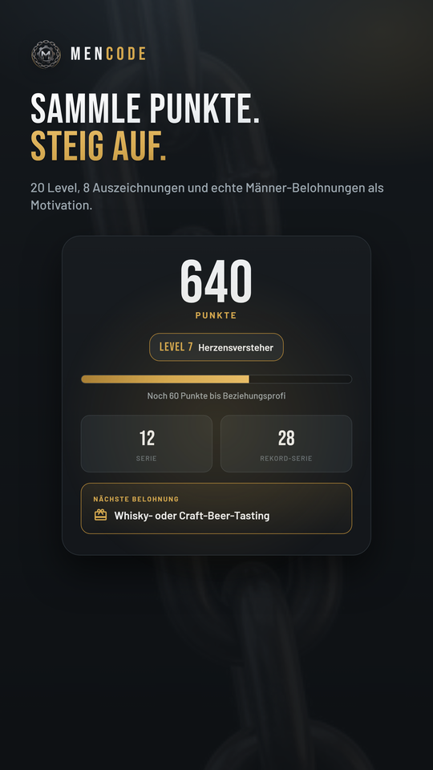
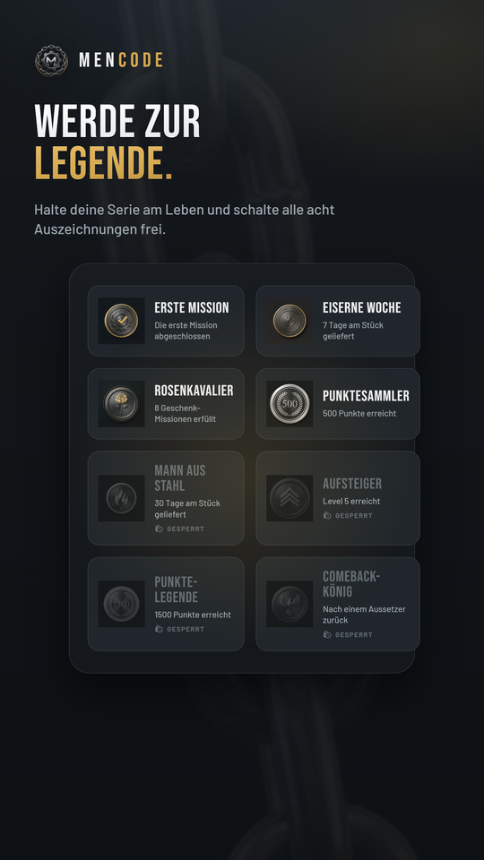
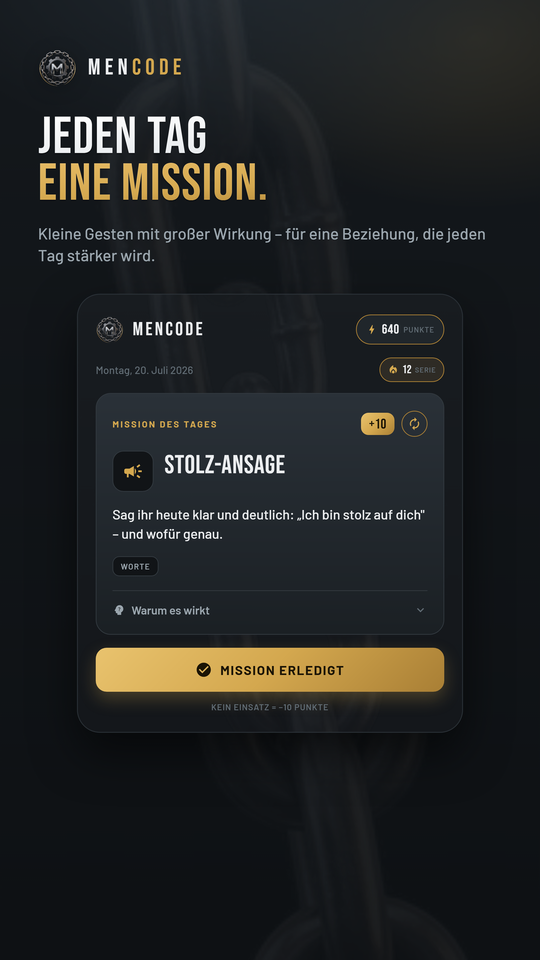

In der App
So sieht MenCode aus



MenCode gibt dir jeden Tag genau eine kleine, konkrete Mission, mit der du deiner Partnerin zeigst, dass sie zählt. Kein Rätselraten, kein dickes Ratgeberbuch – ein Tag, eine Aufgabe, große Wirkung.

Kein Feature-Wirrwarr – nur das, was wirklich zählt.
Für jeden Tag im Jahr eine eigene Idee – von kleinen Gesten bis zu gemeinsamen Erlebnissen. Nie zweimal dasselbe.
Jede Mission erklärt den psychologischen Kniff dahinter. Du verstehst, was in einer Partnerschaft wirklich zählt.
Sammle Punkte für jede erledigte Mission, steig durch 20 Level auf und schalte echte Belohnungen frei.
Für Serien, Meilensteine und Comebacks. Werde zur MenCode-Legende und zeig, dass du dranbleibst.
Missionen berücksichtigen Jahreszeit, Wetter und Feiertage – nie eine Draußen-Idee bei Dauerregen.
Keine Anmeldung, keine Werbung, keine Datensammelei. Läuft komplett offline auf deinem Handy.


Jeden Tag wartet genau eine neue Mission auf dich – konkret, machbar, in wenigen Minuten erledigt.
Setz sie um, egal ob Wort, Geste oder gemeinsame Zeit. Danach markierst du sie als erledigt.
Du steigst im Level auf, schaltest Auszeichnungen frei und baust Tag für Tag eine stärkere Beziehung.
MenCode ist eine App für Männer, die ihre Beziehung stärken wollen. Jeden Tag zeigt sie dir genau eine kleine, konkrete Mission – von einer liebevollen Geste bis zu einer gemeinsamen Aktivität – mit der du deiner Partnerin zeigst, dass sie zählt.
Ja, MenCode ist kostenlos im Google Play Store erhältlich. Es gibt keine Werbung und keine Kaufzwänge in der App.
Ja. MenCode läuft komplett offline. Die einzige optionale Online-Funktion ist ein abschaltbarer Wetterabruf, der Missionen an die aktuelle Jahreszeit und das Wetter anpasst.
Nein. MenCode benötigt kein Konto und keine Anmeldung. Es gibt kein Tracking und keine Analyse-Dienste. Alle Fortschrittsdaten bleiben ausschließlich lokal auf deinem Gerät. Mehr dazu in der Datenschutzerklärung.
MenCode hat 365 verschiedene Missionen – für jeden Tag im Jahr eine. Sie passen sich zusätzlich an Jahreszeit, Wetter und Feiertage an, damit es nie langweilig wird.
MenCode ist auf Deutsch, Englisch, Französisch, Spanisch und Niederländisch verfügbar.
Ja, du kannst einmal pro Woche die Tagesmission gegen eine neue, zufällige Mission tauschen.
Kostenlos, ohne Konto, in wenigen Sekunden startklar.
Jetzt bei Google Play laden